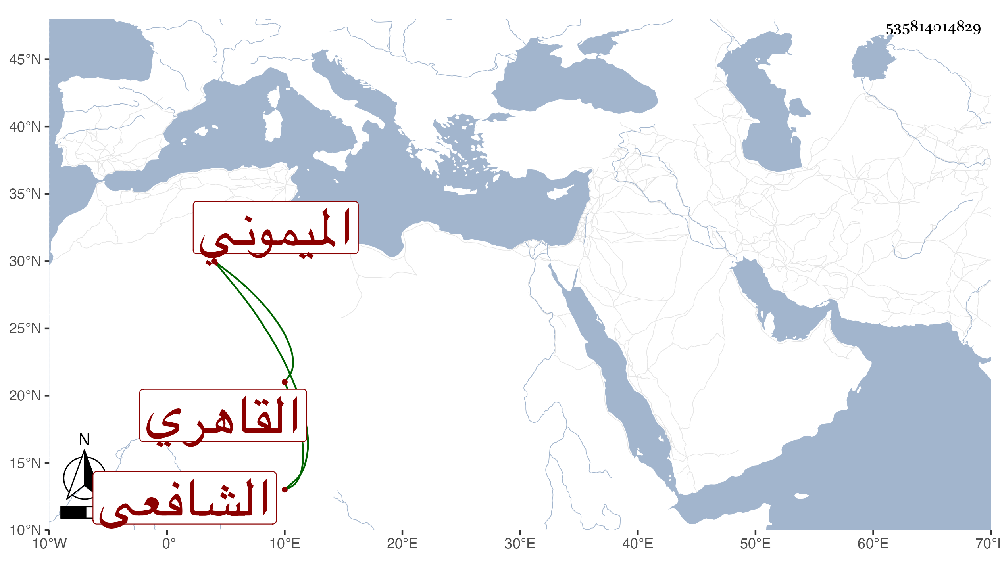

0902Sakhawi.DawLamic.ITO20230111-ara1.EIS1600.535814014829
Biography ID: 535814014829
725
محمد بن عمر الشمس بن السراج الميموني ثم القاهري الشافعي . ولد في حدود السبعين وسبعمائة وكان أبوه من أعيان الطلبة الشافعية عند البلقيني وغيره ونقيب الزاوية المعروفة بالخشابية في جامع عمرو فمات وابنه صغير فاشتغل بالفقه وتنزل في الوظائف ثم ترك وسلك طريق الفقر وجلس في زاوية ونصب له خادما ثم ترك وواظب الحج كل سنة مع المداومة جدا على التلاوة ووقعت له مع الزين التفهني قاضي الحنفية كائنة ذكرت في حوادث سنة ثمان وعشرين ونجا منها بعد أن حكم بإراقة دمه وعاش حتى مات في البيمارستان بالقولنج في سنة إحدى وأربعين قاله شيخنا في إنبائه وكان الكف عن قتله بمساعدته وتأثر التفهني مع تعصب أكثر الجند والمباشرين معه .
